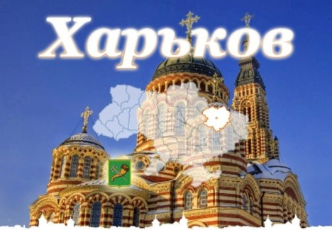

Экскурсии по Харькову
Харьков - второй по величине город Украины, экономический и научный центр, один из крупнейших мегаполисов Европы и бывшая первая столица государства. Вообще, в истории Харькова часто встречается слово «первый» и «самый» – первый в Украине университет, первая в Российской империи первомайская демонстрация, первый расщепленный атом лития, первое высотное здание в СССР, самая большая площадь в Европе, самая крупная в Европе синагога и т.д.
Несмотря на то, что Харьков является городом промышленным, он гостеприимен и очень интересен. Он сочетает в своей застройке дворянские особняки, конструктивистские здания 20-х годов и послевоенный сталинский неоклассицизм, именно смешение стилей является неповторимой особенностью города. Кроме того, жизнь Харькова всегда насыщена событиями: выставки, концерты джазовых исполнителей, презентации книг, театральные перфомансы и музыкальные вечера сменяют друг друга как в калейдоскопе.
